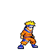
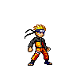
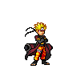
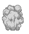
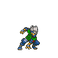

少年篇 · 风遁 / 分身
漩涡鸣人
「我一定会成为火影！」
SURVIVE. EVOLVE. BECOME A SHINOBI.

「我一定会成为火影！」

疾风传Lv.5
分支抽卡Lv.10+自动投掷 · 全角色通用
近身触发 · 自动施放

自动触发 · 独立寻敌
木叶村 · 探宝 / 生存 / 决战
在无障碍的木叶演习场自由走位。攻击宝箱后拾取道具；兵粮丸恢复生命，吸铁石回收散落经验。
探索场地，击碎第一只宝箱
Lv.5 自动切换疾风传形象
Lv.10 起抽取形态进化卡
封印结界收束场地，迎战卡卡西
写轮眼的拷贝忍者

◆ 红线出现后横向移动。
雷切结束后的硬直是输出机会。
每一次试炼，都是新的忍道。
NARUTO UZUMAKI
选择出战忍者，开启新的试炼。